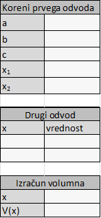

# Polinomi v škatlah Kakšna je največja prostornina škatle z odprtim vrhom, ki jo lahko oblikujemo iz kosa kartona pravokotne oblike? --- ## Polinomska funkcija Polinomska funkcija $p(x)$ ima standardno obliko $p(x) = a_n x^n + a_{n−1} x^{n−1} + \cdots + a_1 x + a_0$. To je vsota členov, kjer je vsak sestavljen iz konstantnega koeficienta ($a_i$), pomnoženega z neodvisno spremenljivko ($x$) na nek nenegativen celoštevilski eksponent; členi so razvrščeni po padajočih eksponentih. Stopnja polinomske funkcije je vrednost največjega eksponenta ($n$). <font size="3">*PRIMER*</font> \ $f(x) = 5x^3 − 24x^2 + 13x + 27$ je polinomska funkcija tretje stopnje (znana tudi kot kubična funkcija). Konstantni člen (v tem primeru $27$) je koeficient, pomnožen z $x$ na ničelno potenco. <!-- Ta modul ponazarja metode iskanja lokalnih maksimumov in minimumov polinomskih funkcij. Ena metoda uporablja račun, natančneje koncept, da je prvi odvod funkcije nič pri lokalnih maksimumih in minimumih. Odvod polinomske funkcije stopnje $n$ je še ena polinomska funkcija stopnje $n−1$. Posledično ta metoda hitro postane algebrski problem iskanja korenin polinomske enačbe. Tukaj je priložnost, da uporabite kvadratno formulo. Preglednica to olajša. --> ??? Opombe k slydu --- ## Problem Imate list lahkega kartona, ki ga želite zložiti v škatlo z odprtim vrhom, tako da iz vsakega vogala izrežete kvadrat dolžine $x$ in prepognete stranice. List kartona je velik $8 \times 10 ~ cm$. Katera vrednost $x$ nam da največjo prostornino škatle?  <div style="page-break-after: always; visibility: hidden"> \pagebreak </div> <!-- Na to vprašanje lahko odgovorimo na več načinov. --> <!-- ## Vsebina Slide 4 vas usmeri na spletno mesto na internetu, kjer lahko poskusno rešite problem s programčkom, Slide 5 pa opisuje, kako bi lahko poskusno določili odgovor z uporabo kartona, škarij in nekaj žitnih kosmičev. Diapozitivi 6-9 vas vodijo k reševanju težave z uporabo preglednice za izračun prostornine za številne vrednosti x, diapozitiv 10 pa vas prosi, da narišete graf polinomske funkcije, podane na seznamu x in V. Diapozitivi 10-13 vas vodijo k reševanju problema z uporabo računa in kvadratne formule. Diapozitiv 14 vas prosi, da sestavite preglednico za iskanje korenin kvadratne enačbe ob predpostavki, da se ne spomnite kvadratne formule. Diapozitiv 15 ima naloge ob koncu modula. --> <!-- Ta stran ne deluje več --> <!-- ## Uporaba interneta Lahko poskusite najti nekaj na internetu. Lahko na primer poiščete »tridimenzionalna škatla« in najdete čudovito animacijo z naslovom »Tridimenzionalni programček škatle: delo z prostornino«. Tukaj je opis s spletne strani: Ta programček je odličen za preučevanje volumna pravokotne prizme in kako ga povečati. Grafika v programčku simulira kos papirja, ki je dolg 8 enot krat 10 enot. Povlecite kazalec v zgornji levi kvadrant. Črtkane črte bodo pokazale, koliko vogalov papirja bo odrezanih. Kliknite gumb "Izreži in zloži" in papir se bo zložil v škatlo. --> --- ## Sestavljanje škatle Lahko vzamete veliko listov kartona in preizkusite veliko različnih možnosti za izbiro $x$-a. Za to boste potrebovali lepilni trak, nekaj za polnjenje škatle (npr. pesek, zrnato žito ...).\ Za vaš prvi $x$ - recimo $x = 0,5 ~cm$ - napolnite zloženo škatlo. Nato poskusite z nekoliko večjim $x$ - recimo $1,0~cm$. Potem stresite vsebino prve škatle v drugo škatlo in ugotovili boste, da boste morali dodati več polnila. Nato po potrebi postopek ponavljajte, dokler ne ugotovite, da imate z večjim $x$ preveč vsebine iz prejšnje škatle. Seveda obstaja boljši način - lahko oblikujemo preglednico. <!-- <div style="page-break-after: always; visibility: hidden"> \pagebreak </div> --> --- ## Izdelava preglednice Prostornina pravokotne škatle je odvisna od dolžine ($l$), širine ($g$) in višine ($h$) le-te. Enostavno preverimo, da je dolžina pravokotne osnove enaka $10 - 2x$, širina $8 - 2x$ in višina $x$. Zato lahko enostavno najdemo prostornino: $$V = l\times g\times h$$ Sedaj želimo zgraditi preglednico, ki pomnoži $l$, $g$ in $h$, za številne zaporedne vrednosti $x$. Začnemo lahko s stolpcem za $h$, stolpcem za $g$, stolpcem za $l$ in stolpcem za njihov produkt - prostornino $V$. V priloženi *Excel* datoteki najdete preglednico (kot na sliki), ki jo boste uporabili v nadaljevanju. <figure> <img src="izračun_volumna.png" alt="Koreni odvoda"> </figure> V prvem stolpcu bomo generirali vrednosti za $x$, in sicer bomo začeli z $0$, ki je že vpisana. Nato pa boste v naslednjo vrstico (v celico ``` B4```) vpisali formulo, ki nam bo podala vrednosti za $x$ glede na želeno diferenco med vrednostmi (izberete si jo v tabeli). Formula se glasi ``` =B3+$I$5 ```. Formulo 'pomnožite' po stolpcu navzdol, dokler ne pridete do vrednosti $\frac{dolžina}{2}$. V drugem stolpcu bomo generirali vrednosti za dolžino $l$ dobljene škatle, glede na velikost $x$ in dolžino prvotnega kosa kartona (podano v tabeli). Ta formula je sledeča: ``` =$I$3-2*B3 ```. Prav tako tudi to formulo, uporabite na celotnem stolpcu C tabele. V tretjem stolpcu bomo generirali vrednosti za širino $g$ dobljene škatle, glede na velikost $x$ in širino prvotnega kosa kartona (podano v tabeli). Ta formula je sledeča: ``` =$I$4-2*B3 ```. Prav tako tudi to formulo, uporabite na celotnem stolpcu D tabele. V petem stolpcu bodo zapisane vrednosti za višino $h$ škatle, ki je enaka velikosti $x$, torej formula: ``` =B3 ```. Tudi to formulo 'pomnožite' do konca ustvarjene tabele. Sedaj morate samo še v šestem stolpcu zapisati formulo za velikost prostornine dobljene škatle, in sicer: ``` =C3*D3*E3 ```. Tudi to formulo zapišite v vse vrstice tabele. <font size="3">VPRAŠANJE</font> \ Kolikšna je največja prostornina škatle v skladu s to tabelo? Kaj pa, če bi uporabili manjši prirastek za $x$? Sedaj poskusite spreminjati diference za $x$ na manjše vrednosti (s spustnim seznamom v tabeli na desni), ustrezno prilagodite tudi velikost nabora podatkov v glasvni tabeli (levo). <!-- Sklepamo lahko, da se do najbližjega $0,1~cm$ največja prostornina ($$$$$) pojavi pri $x=1,5~cm$. --> Vizualizirajte rezultate tako, da jih narišete na graf. Pri izdelavi grafa izberite razpršeni graf XY. <!-- in označite osi. Po izpolnjevanju navodil počistimo predstavitev: z desno miškino tipko kliknemo na osi, spremenimo merilo (največje in najmanjše vrednosti ter korak) in izberemo ustrezno število decimalnih mest (pod zavihkom »število«). --> --- ## Prvi in drugi odvod funkcije za iskanje lokalnega maksimuma in minimuma Na primeru kvadratnega in kubičnega polinoma si poglejmo uporabo prvega in drugega odvoda za iskanje lokalnih maksimumov in lokalnih minimumov. > <font size="3">***PRIMER 1***</font> \ > Naj bo $p(x)= -x^2 + 4x + 5$ polinom druge stopnje. \ > Potem je $p'(x) = -2x + 4$ in $p''(x) = -2$.\ > Zapišemo enačbo $p'(x)= 0$, ki nam da $-2x + 4 = 0$ in $x = 2$. \ > Ker je $p'(2) = 0$ in $p''(2) < 0$, je točka $(2, 9)$ lokalni maksimum. > <font size="3">***PRIMER 2***</font>\ > Naj bo $p(x) = \frac{x^3}{3} - \frac{5x^2}{2} + 6x + 1$ polinom tretje stopnje. \ > Potem je $p'(x) = x^2 - 5x + 6$ in $p''(x) = 2x - 5$. \ > Zapišemo enačbo $p'(x) = 0$, ki nam da $x_1 = 2$ in $x_2 = 3$. \ > Ker je $p''(2) = − 1 < 0$ (za $x_1=2$), je točka $(2, 5.67)$ lokalni maksimum, in ker je $p''(3) = 1 > 0$ (za $x_2=3$), je točka $(3,5.5)$ lokalni minimum. Sedaj se vrnimo, k reševanju problema o škatli. Prostornina škatle kot funkcija dolžine izreza je: $$\begin{aligned}V(x) &= x (10 - 2x) (8 - 2x) \\ &= 4x^3 - 36x^2 + 80x\\ &= 4 (x^3 - 9x^2 + 20x) \end{aligned}$$ Potem je prvi odvod: $$V'(x) = 4 (3x^2 - 18x + 20)$$ Drugi odvod pa je: $$V''(x) = 4 (6x - 18)$$ Zdaj naj bo $V' = 0$. Rešiti želimo enačbo $3x^2 - 18x + 20 = 0$. Glede na kvadratno enačbo: $ax^2+bx+c=0$; sta korena enaka: $x_{1,2}=\frac{-b \pm \sqrt{b^2-4ac}}{2a}$. Tudi za reševanje tega problema lahko ustvarimo preglednico, ki nam bo pomagala pri iskanju korenov. > <font size="3">***NALOGA***</font> \ > Sestavite preglednico za izračun $x$ z uporabo kvadratne formule > $a = 3$, > $b = −18$, > $c = 20$. Preglednica za reševanje $3x^2 - 18x + 20 = 0$ z uporabo $x=\frac{-b \pm \sqrt{b^2-4ac}}{2a}$ in $V''(x) = 4 (6x - 18)$ izgleda tako: <figure>  </figure> Za vrednosti $a$, $b$ in $c$ vnesite podane vrednosti. Vrednosti $x_1$ in $x_2$ izračunamo po kvadratni formuli, torej vnesemo formulo: ``` =(-B3+SQRT(B3^2-4*B2*B4))/2*B2``` za $x_1$ in ``` =(-B3-SQRT(B3^2-4*B2*B4))/2*B2 ``` za $x_2$. Za vrednost drugega odvoda pri danem $x$-u vnesemo preprosto formulo: ``` =4*(6*A10-18) ```. Pri izboru $x$-a za izračun končnega volumna moramo biti pozaorni, da vzamemo vrednost, ki nam bo podala maksimalen volumen, torej tisto, ki ima negativno vrednost drugega odvoda. To storimo s formulo: ``` =INDEX(A10:B11;MATCH(MIN(B10:B11);B10:B11;0);1) ```. Volumen pa izračunamo po prej izračunani fomrmuli. Torej vnesem enačbo: ``` =4*(B14^3-9*B14^2+B4*B14) ```. <!-- 1. del najde dva korena V'(x) = 0. Celica C6 uporablja pozitivni kvadratni koren. Celica C7 uporablja negativni kvadratni koren. 2. del določa, ali rešitev daje lokalni maksimum ali lokalni minimum. Celica B11 je enačba za ponovitev celice C6; podobno celica B12 kliče celico C7. Celici C11 in C12 uporabljata enačbo za drugi odvod. 3. del zbira rezultate. Celica C15 pokliče ustrezno vrednost za x (celica C7). Celica C16 izračuna prostornino iz celice C15. --> --- ## Zaključek 1. Zakaj preglednice, ki smo jih ustvarili uporabljajo vrednosti $x$ v območju od $0$ do $4$? 2. Pri iskanju najboljše vrednosti za $x$, smo le-to iskali na $0,1~cm$ natančno. Poskusite to storiti za manjši korak. Kakašna je razlika v rezultatu? 3. Nalogo prevedite še za stvaritev škatle, ustvarjene iz katona velikosti $20 \times 10~ cm$. Poiščite največjo prostornino takšne škatle. 4. Imamo pravokoten kos kartona velikosti $a \times b$. Poiščite dolžino kvadratnega izreza, ki maksimizira prostornino povezane odprte škatle. 5. Pravokotne škatle so različnih oblik in velikosti. Poiščite neko odprto škatlo in določite njeno prostornino. Nato škatlo razprite in določite velikost prvotnega pravokotnega kosa kartona ter kako je bil izrezan in zložen za izdelavo vaše škatle. Izračunajte največjo prostornino škatle, ki bi jo lahko naredili iz tega kosa kartona. Je večja od tiste, s katero ste začeli?